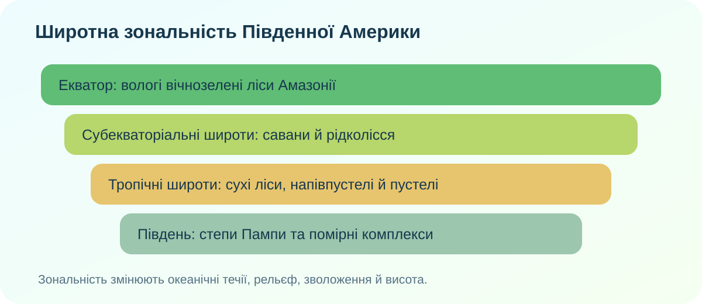
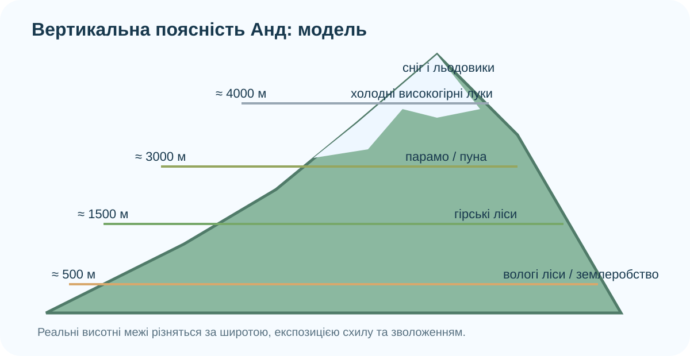

1Почніть із суперечки
Гіпотеза А
Природні зони змінюються тільки через широту.
Гіпотеза Б
Широта задає загальну схему, але рельєф, течії й зволоження її сильно змінюють.
Гіпотеза В
В Андах висота важливіша за широту: на одному схилі існує кілька висотних поясів.
2Прочитайте материк із карти
© OpenStreetMap contributors. Простежте Амазонську низовину, Анди, Атакаму, Пампу, Патагонію та узбережжя Атлантики.
3Зберіть широтну модель

Розпізнайте зону
Високі температури цілий рік + рясні опади + багатоярусний ліс + дуже високе біорізноманіття.
Розпізнайте зону
Рівнинні трав’янисті простори, помірніше зволоження, родючі ґрунти, значне сільськогосподарське освоєння.
4Амазонія як цілісний природний комплекс

Реальна фотографія Амазонії, Wikimedia Commons. Відкрийте джерело зображення, якщо потрібно переглянути ліцензію.
Амазонія працює як система: тепло + волога → густа рослинність → інтенсивна евапотранспірація → повторне надходження вологи в атмосферу → опади → річкова мережа → заплавні та лісові екосистеми.
UNESCO описує Центральний амазонський природоохоронний комплекс як одну з найбагатших на біорізноманіття територій планети; тут поєднуються варзеа, затоплювані ліси ігапо, озера й канали.
UNESCO: Central Amazon ↗NASA Worldview ↗5Підніміться схилом Анд

UNESCO наводить дуже наочний реальний приклад: у Національному парку Манú природні комплекси змінюються від низинних тропічних лісів до високогірних угруповань у межах приблизно 150–4200 м. Це не одна універсальна «драбина» для всіх Анд: межі залежать від широти, експозиції та зволоження.
UNESCO Manú ↗UNESCO Huascarán ↗Механізм
6Екологічний детектив
Сельва
Великі листки, ліани, епіфіти, багатоярусність.
Пуна
Низькорослі трави, подушкоподібні форми, витривалість до холоду.
Атакама
Рідкісна рослинність, ксерофіти.
7Коротке відео з КТП
Після перегляду випишіть один факт, що підтверджує широтну зональність, і один — вертикальну поясність.
8Проміжний висновок — і тільки потім теорія
9Теорія після дослідження
Широтна зональність
Від екваторіальних лісів Амазонії природні комплекси змінюються через савани й рідколісся, сухі тропічні та субтропічні комплекси до степів і помірних ландшафтів півдня.
Чому схема не ідеальна
Рельєф Анд, холодна Перуанська течія, панівні вітри, континентальність і нерівномірне зволоження створюють різкі контрасти на однакових широтах.
Амазонія
Це взаємопов’язаний комплекс лісу, річок, ґрунтів, атмосфери та живих організмів. Зміна одного компонента запускає зміни інших.
Вертикальна поясність
З висотою змінюються температура та умови зволоження, тому змінюються ґрунти й рослинність. Конкретні межі поясів залежать від широти і схилу.
10CER: доведіть, а не перекажіть
Питання: «Чому Південна Америка одночасно демонструє і широтну зональність, і сильні відхилення від неї?»
🏠 Домашнє завдання
§37. Оберіть одну пару контрастних природних комплексів: Амазонія—Атакама, Пампа—Патагонія або низинний ліс—високогірна пуна. Зробіть міні-досьє з 5 пунктів: положення, клімат, ґрунт/рослинність, 2 адаптації організмів, причинне пояснення контрасту.
Електронний підручник Гільберг—Довгань—Совенко, 2024 ↗Кросворд із КТП ↗